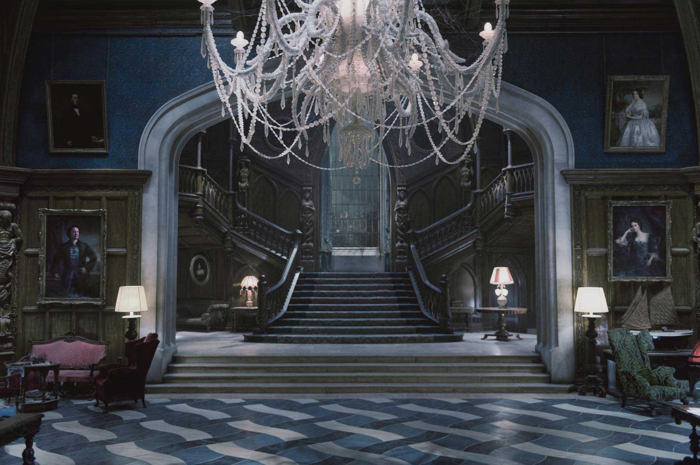
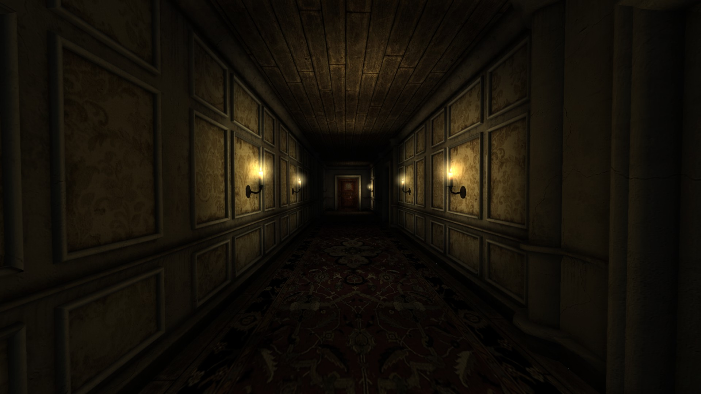

Vincent, after playing around frantically with the breaker-box, finally flicks a switch to power up the lights in the house. “Here we go, let’s see what Mr. Jonson was bitching about,” Vincent says to himself as he marches across the lawn and up the creaky stairs and into the house.
He walks into the front door and is shocked that a home that looks so horrible on the outside could look so beautiful on the inside. The home was completely spotless, yet it appeared that there were people living there. It was furnished with authentic vintage couches, chairs, and tables, and had very elegant wallpaper across the entire perimeter of the main floor. It looked like a model home in a very old neighbourhood. As he takes a few more steps in, he starts to feel warm, very warm, actually. He murmurs to himself, “god it’s a fucking sweat shop in here.”
Vincent then abruptly whipped his head around his right shoulder, startled in an attempt to make out why he just heard the jingling of chains. The temperature picked up. Beads of sweat were rolling down from Vincent’s face and back. The chains then moved to the opposite side, forcing Vincent to whip his head around the other way. Nervous, Vincent walks further towards the source of the jingling. He approaches a door, where the jingling noise becomes more prevalent. As his bloody hand reaches for the doorknob, the lights switch off. The room is left with a silent, eerie, unwelcoming feeling. “This is it,” he thought to himself. A real case. And it rested in his hands.
He finds the doorknob in the pitch black and turns it. As he pushes the door open and it slowly creaks as he steps in, still in the dark, that repulsive stench struck his nose once again. Along with the stench, he notices a small, glowing object on the floor in the middle of the room. The air in the room is very thick and heavy, giving Vincent a sense of negative energy. "What on God's green earth is that?" Vincent thought to himself. He decides to walk over to the middle of the room to get a closer look at the strange glowing object. Gazing at the object in a clear state of confusion, Vincent notices a series of blank spaces on the front. He realizes that in order to identify the object, he must solve the riddle.